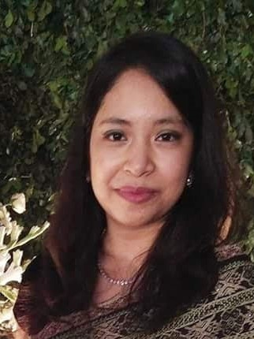

Hey!
I’m Aaphsaarah Rahman. A little background about myself - I’m a graduate student at Cornell University, Weill Cornell Medicine, acquiring my Masters in Biostatistics and Data Science. I am a Data Enthusiast. My passion for Data Science world have brought me here and I’m enjoying the ride tremendously so far. I did my undergrad in Electrical and Electrical Engineering at North South University, Bangladesh. I have published and presented a paper titled “A Novel Braille Pad with Dual Text-to-Braille and Braille-to-Text Capabilities with an integrated LCD Display” in the 2017 International Conference on Intelligent Computing, Instrumentation and Control Technologies (ICICICT), Kerala, India, held on 6th -7th July 2017. During this capstone project, I made a Braille Pad through which I found my love for programming. And after doing my internship at GrameenPhone Ltd, (Telenor Group) under Data Analyst and Research team, I was adamant to pursue my career in Data Science.
Coding is fun, easy and adventurous once you get the gist of it. I love sharing open-source codes and providing advices on it. This blogs and articles are about sharing some interesting insights, which I explored while doing few projects. Hope you enjoy it!
If you like to know more about me, then here is my resume.
MS in Biostatistics and Data Science
Sept 2019 – Aug 2020
Weill Cornell Medicine of Cornell University,
NY, USA
Specializing in R, Python, Biostatistics, Data Management, Pharmaceutical studies.
B.Sc in Electrical and Electronic Engineering
Jan 2013 – Apr 2017
North South University,
Dhaka, Bangladesh
Major: EEE (Electrical and Electronic Engineering)
Selected courses: Data Communications and Computer Networks, Mobile and Wireless Communication System, Communication Electronics, Introduction to VLSI Design, Verilog HDL: Modeling, Simulation, and Synthesis.
Presented a paper titled “A Novel Braille Pad with Dual Text-to-Braille and Braille-to-Text capabilities with an integrated LCD Display” in the 2017 International Conference on Intelligent Computing, Instrumentation and Control Technologies (ICICICT), Kerala, India, held on 6th -7th July 2017. And at this conference, we got the Best Paper Award. The paper was about Braille Pad which we made for the Capstone Project in my final year at North South University and it was a success.
The paper is published in IEEE Xplore. -
S. Sultana, A. Rahman, F. H. Chowdhury, and H. U. Zaman, “A novel Braille pad with dual text-to-Braille and Braille-to-text capabilities with an integrated LCD display,” 2017 International Conference on Intelligent Computing, Instrumentation and Control Technologies (ICICICT), Kannur, 2017, pp. 195-200.
Link can be found here .
• Statement of Accomplishment, on completing online courses on “ Intro to Python for data science”,” Intermediate Python for Data Science Course”, “Python Data Science Toolbox (Part 1) Course” from Data Camp website. Nov 2017
• Completed Top-up IT Training, conducted by Ernst & Young LLP, India under Leveraging ICT for Growth, Employment and Governance (LICT) Project of Bangladesh Computer Council (BCC), ICT Division, People’s Republic of Bangladesh on Web Development under NASSCOM IT-ITES Sector Skill Council (SSC) Certification, in Jan 2017
• Received Best paper award on conference paper- “A Novel Braille Pad with Dual Text-to-Braille and Braille-to-Text capabilities with an integrated LCD Display” paper published in IEEE Xplore, July 2017
• Received Art and Practice of Leadership certificate (APL-8 graduate) from Bangladesh Youth Leadership Centre (BYLC), 2015
• Received Daily Star Award in A’ levels (2012)
• Attained Bronze and Silver Standard of the International Award for Young People, Duke of Edinburgh, in 2011, 2013 respectively
•Member of NSU tuition committee, 2017 Finalist of YLP, Youth Leadership Prize, BYLC, 2016
•INSB Member-(IEEE North South University Student Branch), 2016 Home tutored for 3-years, 2013-2016
•Green Leaf Youth Association, a daylong fundraising event for children, 2013
•Jaago, raised fund for children, 2013
•Human Aid Foundation, raised fund for tree plantation and blind children,2013